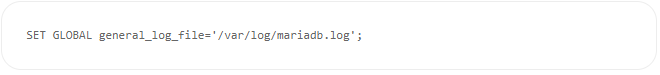
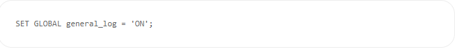
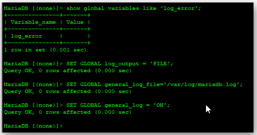
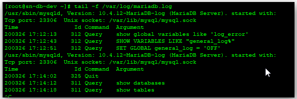
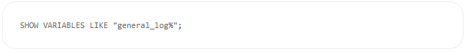
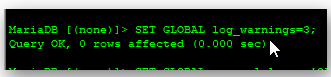

Activar logs en MySQL o MariaDB
En ocasiones tenemos problemas con nuestra base de datos en MySQL o MariaDB
y necesitamos ver dónde puede estar el problema. Para ello necesitamos activar los logs en MySQL o MariaDB.
Os explicaré como poder activar los logs a continuación.
Primero de todo vemos dónde vamos a colocar el archivo de logs. En éste ejemplo usaré un CentOS 7 y lo ubicaré en:
/var/log/mariadb.log
conectaremos a nuestro mysql y lo que haremos será indicar que la salida de los logs será a un archivo.
A continuación especificaremos dónde guardaremos los logs.
Y finalmente habilitamos los logs.

Con ésto habremos activado los logs y podremos ver en el archivo especificado.
Es recomendable sólamente activar los logs para troubleshooting.
Si dejamos los logs activados siempre, podemos llegar a tener problemas de espacio
en disco ya que los logs almacenarán todas las queries y consultas que hagamos a nuestras bases de datos.
Para desactivar los logs, haremos lo siguiente:
Para saber si tenemos activados los logs o no, lo podremos ver con
Por defecto los logs mostrarán unicamente las consultas que hacemos, para que nos muestren
más información,
tendremos que cambiar el nivel de debug de los logs.

| Realizado por: | Siguenos en las redes sociales: |
| Begoña Calvo, Daniel Artigues y Carlos Agueda |


|